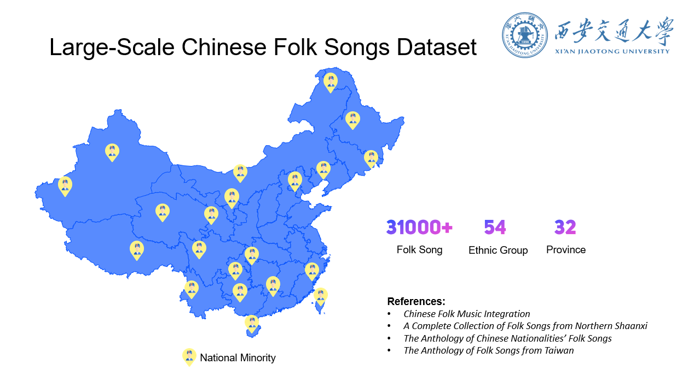

MGD: Large-Scale Chinese Folk Songs Dataset
1. Introduction to Chinese folk songs
For details, please refer to China Culture Website.1.1 History of Chinese folk songs
Folk song is the longest history, simplest structure, richest numbers, and widest spreading music genre among Chinese traditional culture. The earliest Chinese poetry anthology, Book of Songs , appeared 3000 years ago. The 305 poems collected in the anthology are divided into three categories, Feng (local folk songs), Ya and Song (court songs, banquet songs, flattering praises, and sacrificial pomes), which display the music for folk customs, court and ritual of the pre-Qin period (before 211 B.C.E). Tan Ge (弹歌) recorded in The History of Wu Kingdom and Yue Kingdom (吴越春秋)is still popular among farmers of Jiangsu Province, and there are some ancient songs and secular songs of the Ming (1368-1644) and Qing (1616-1911) Dynasties transmitted from generations to generations in different regions.
1.2 Taxonomy
The folk songs of the Han people, which accounts for above 90% of China’s population, fall into nine categories according to music genres as haozi (work songs, 号子), shan’ge (mountain songs, 山歌), tian’ge (field songs, 田歌), xiao diao (small tunes, 小调), wu’ge (dance songs, 舞歌), yu’ge (fisherman’s songs, 渔歌), ritual songs, children’s songs, vendors’ cries (生活音调).
The ethnic minorities in China all have their work songs, mountain songs, dance songs, ritual songs (礼俗歌), and children’s songs. Besides, love songs (情歌), narrative songs (叙事歌), and religious songs are all highly important.
Haozi: Work Songs
Haozi (Work songs) has a long history. They appeared and were sung in labor; therefore, their rhythms are closely connected with labor rhythms. They are classified by different workplaces into the following kinds such as forest work songs, agricultural work songs, boatman work songs, fisherman work songs, construction work songs, transportation work songs, workshop work songs, etc. They are characterized by their strong rhythms and the singing form of a solo leading singer and a group of responding singers.
Shan’ge: Mountain Song
This kind of song is widely popular in mountainous areas or the fields, its music has such characters as free rhythms, broad range, and exalt tune. For example, Hua’er is a favorite song in northwest China provinces such as Gansu, Ningxia, and Qinghai; Xintianyou (信天游), Pashandiao (爬山调), and Shan’qu (山曲) are popular in Shaanxi and Shanxi Provinces.
The shan’ge of the minorities is usually popular in plateaus, mountainous areas, or prairies, such as lalu (拉鲁) of the Tibetan ethnic group, changdiao (aradun-urtu-yin-daguu, 长调) of the Mongolia ethnic group, feige (飞歌) of the Miao ethnic group. Its music is usually in the form of free measures with the characters of unrestrainedness, sonorousness, vehemence, and melodiousness.
Tian’ge: Field Songs
Documentary - Weeding Drumming of Yi Chang
Field songs are folk songs with a long history that are popular and sung among farmers who work in the rice-growing field in busy farming seasons in the middle and lower reaches of the Yangtse River. Their typical singing form is that a mastersinger sings it with the accompaniment of gongs, drums, suona, and other instruments, and it is characterized by a large structure, dozens of interlinked melodies, such as Jiashan field song (嘉善田歌) of Zhejiang Province, rice-seedling-transplanting work song (栽秧号子) of Jiangsu Province, tian shan'ge (田山歌) of Shanghai. In addition, there are diverse names and types such as transplanting gong and drum song (栽田锣鼓), weed-pulling gong and drum song (薅草锣鼓), cart and water gong and drum (车水锣鼓), fanqiang (畈腔), washan drum song (挖山鼓), wadi drum song (挖地鼓), jiao’ge gong and drum song (叫歌锣鼓), hua haozi work song (花号子).
Xiao Diao: Small Tunes
Xiao Diao is popular among towns or countries and is characterized by fixed melody and lyrics, orderly structure, and subtle and melodious tunes. The participation of some professional artisans and men of letters in writing lyrics and composing makes it more beautiful, some of which have become qupai (曲牌) tune names and formed many variants such as molihua tune (茉莉花调), mengjiangnv tune (孟姜女调). Some of the xiao diao of the Ming and Qing dynasties have developed into the styles of interlinked qupai or cyclic forms such as wudadiao (五大调) of Shandong Province, kunqu (兴县昆曲)of Xing County in Shanxi Province, daqiang (左权大腔)of Zuoquan of Shanxi.
Wu’ge: Dance Songs
Dance songs are folk songs singing while dancing, characterized by strong rhythms, and mainly sung during festivals, celebrations, or gatherings such as shehuo (merry-making activities,社火), yang’ge tune (a popular rural folk dance, 秧歌), and huahui’ge (花会歌) in north China; deng’ge (lantern song, 灯歌), caicha’diao (tea-picking song, 采茶调) and hua’gu (flower-drum tune, 花鼓)in south China.
Most of the minorities in China are good at singing and dancing, their singing and dancing have strong local flavors and charms, such as meshrep (collected song-dances, 麦西热甫) and lapar (a small-scale dance, 来派尔) of the Uygur ethnic group, salaye (playing dragon lantern tune, 撒拉耶) of the Qiang ethnic group, tiaoguozhuang (跳锅庄) and xianzi dance (弦子舞) of the Tibetan ethnic group, alili (阿里里) and worere (窝热热) of Naxi ethnic group, duoye (多耶) of the Dong ethnic group, lurigele (鲁日格勒) of the Daur ethnic group, nukegaile (奴克该勒) of the Evenks ethnic group, and lvrigeren (吕日格仁) of the Orogen ethnic group.
Yu’ge: Fisherman’s Songs
Fisherman’s songs generally reflect fishermen’s life characterized by graceful and calm styles in short structures, popular in the coastal regions. There are diverse types of fisherman’s songs about fishermen’s life in different regions such as dan'ge (boat dweller song, 疍歌), yushi diao (fisherman lyric tune, 渔诗调), xianshui ge (salt water tunes, 咸水歌) in Guangdong and Fujian Provinces, for fishermen are usually called dan min (boat dweller, 疍民); fisherman’s songs in Hubei and Hunan Provinces; nanhai fisherman’s songs (南海渔歌) in Chaozhou and Shantou area. Fisherman’s songs are sometimes called boatman’s songs (船歌).
Ritual Songs
Ritual songs are sung on the occasions of folk rituals such as wedding tunes in weddings, funeral tunes in funerals, sacrificial tunes in sacrifices, dragon boat tunes in dragon boat races, wine tunes in drinking, congratulation tunes in meeting and seeing off friends, and relatives, most of which have fixed repertoires and singing procedures.
Children’s Songs
Children's songs are about children’s life, one of which is children’s game songs characterized by short and simple structure, and simple and lively melodies such as catching dragon-flies, fire-bugs; another is lullabies such as cradle songs, child swaying songs characterized by calm and peaceful tunes and relation with rocking the cradle or swaying the child; the other kind is songs about children’s miserable life or instructive antiphonal songs such as xiao bai cai (小白菜) and little cowherd (小放牛) of Hebei Province.
Vendors’ Cries
Vendors’ cries are tones of the peddling, calling, crying of peddlers or vendors, and chanting tones of ancient poetry. Their rhythms, forms, and structures are closely connected to dialects, and they are the original sources of the genre of folk songs, for some of them are the embryonic form of folk songs.
Love Songs
There are diverse love songs in the minority regions. People sing love on many love occasions such as making friends, falling in love, happiness, and sadness, for example, youfang’ge song (游方歌) of the Miao ethnic group, langshao’ge song (浪哨歌) of the Bouyei ethnic group, wanshan’ge song (玩山歌) of the Dong ethnic group.
Narrative Songs
Chinese minorities like to sing heroic epics, folklores, and folktales in the form of folk songs, this kind of song is usually in the strophic form generally sung by a professional singer or semi-professional artisan with accompaniment or instrument. For example, songs about legendary love stories such as Brother Mawu and Sister Gadou (马五哥与尕豆妹) of the Hui ethnic group, Erip and Senam (艾里甫与赛乃姆) of the Uygur ethnic group, Saliha and Saman (萨里哈与萨曼) of the Kazak ethnic group; Long heroic epics such as Gesar (格萨尔) of the Tibetan ethnic group, Manas (玛纳斯) of the Kirgiz ethnic group; Songs about the history and origin of a minority such as the marriage between Fuxi and his sister (伏羲哥妹配婚姻) of the Yao ethnic group in Guangxi; gu’ge (ancient song, 古歌) of the Miao ethnic group, the Bouyei ethnic group, and the Sui ethnic group in Guizhou; gaohuang’ge (ancient kings song, 高皇歌), panhu’ge (winding calabash gourd song, 盘瓠歌), chuangshiji (Genesis song, 创世纪), and Pan Gu Genesis of the She ethnic group in Fujian and Zhejiang.
In addition to the above, there are other forms with national characters such as passion and vigorous rewap tanchang (dance and instruments, 热瓦甫弹唱) of the Uygur ethnic group, excited dombira tangchang (冬不拉弹唱) of the Kazak ethnic group, witty and humorous kumuzi tanchang (库姆孜弹唱) of the Kirgiz ethnic group, lyrical kayago tanchang (伽倻琴弹唱) of the Korean ethnic group, melodious niutui qin’ge (牛腿琴歌) of the Dong ethnic group, and zhamunie tanchang (扎木聂弹唱) of the Tibetan ethnic group.
Religious Songs
Religious beliefs are importance in some minorities of China. Some minorities have the tradition of primordial worship, which is used in the time when people feel helpless before nature, they pray with songs for the gods to bless them, such as saman diao (shamanic tun, 萨满调) of the Man ethnic group; zhaodao diao (praying tune, 召祷音调) of the Hui ethnic group of Islam; sacrificial song, and Buddha song of minorities in southwest China.
2. Details of folk songs dataset from 31 regions
3. Original References
Collection of Traditional Chinese Folk Music, 中国民间音乐集成4. Contributors
Jing Luo (罗晶), Yongyu Wang (王永裕), Boyuan Ju (巨博元), Yishan Lv (吕逸山), Zhe Li (李喆), Libin Zuo (左立斌), Xukun Guo (郭旭坤), Mingxuan Niu (牛明轩), Zi Huang (黄姿)
Lu Dong (董璐), Kai Wu (吴凯), Jianhang Ding (丁建行), Yinrui Wang (王银瑞), Yuchi Zhang (张与弛), Genlong Jia (贾根龙), Yijia Dong (董怡佳)
5. Contact
For reaching me by email, please use: chinglohsiu[AT]gmail.com or visit my Homepage.